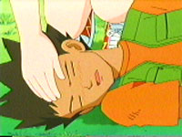

|
|
|
193. Sick
Daze
Everyone has spent a peacefull night beside
a beautifull lake. Ash and Misty are wanting their breakfast. They go to Brock to see when
their breakfast will be done, and he falls over. Hes sick with a high feaver.
Brock is in bed and, Misty and Ash hope for the best. They figure that he's been working hard
so they'r going to let him sleep all day. Brock gets up so he can do his jobs, and falls over.
He has instructions about how to do the chores in his notebook, so Misty and Ash set off to do
them. First, they need to polish Brock's rock type Pokemon. To make it easier Ash uses
Totodile to use water gun of Onix, he gets mad and knocks them all down. Sometimes Ash just
doesnt think.
Brock has a dream. He sees a field of flowers, them some pretty girls. He runs to them but a
meatorite comes and hits him, waking him up. He wants to go help Misty and Ash but his Pokemon
dont let him.
Ash goes looking for some fruit while Misty does the washing. Ash can't find any apples on the
apple tree. It flases to Team Rocket who is sucking up the apples. Ash sees them, and asks
what their doing. They do their motto. They use their "power picker" to get pickachu.
Bulbasaur, Cyndaquil and Chikorita go out and fight Arbok and Victrebell. Flamethrower
releases pikachu and he uses thinderbolt.
Dream: He is a sky with butterfree. He sees the girls and then he runs after them....and falls
through the sky. He wakes up again. Ash gives him some of the apples he got from Team Rocket.
He has hs appetite back so they think hes getting better. Hes gonna take an afternoon nap and
he says that he will catch thoes girls, leaving Ash and Misty confused. Misty goes to make
lunch. She puts in too much salt. She puts sugar to counteract the salt. A little too much.
More salt.... She does that a few times. The recipe is so boreing, just salt and sugar she
tinks. So she dicided to make it more interesting. Soon there are 47 secret inredients. She
tries to give it to Ash but he thinks it would taste good. Misty says its good and takes a
bite, it is horriable. "Like Nothing I'v ever tasted." she says.
Theyre all sleeping outside so they don't disturb Brock. Team Rocket sees then and waits for
them to fall asleep. Jesse finds the food and She loves it. James and Meowth go and try it,
"It aint that I dont like it, its that I hate it." Meowth says. Jesse has a voice disgueser to
sound like Ash and they get a cardboard cutout to trick the pokemon to come to them, right
into their trap. Ash and Misty wake up.
Brock has another dream. He's next to a clear blue sea, and sees the girls again. He runs to
them but gets washed away by a wave. He wakes up again to find that all the pokemon have been
stolen. Ash and Misty fall in a hole while Team Rocket gets in its special air baloon and
grabes all the pokemon. The pokemon are too heavy so they start up the engine starting fans to
propell them up. Pikachu cant shock them without shoking the rest of the pokemon so Team
Rocket grabs Pikachu and takes it up in the balloon. Brock comes and uses Golbat to pop the
air baloon. Team Rocket wants to battle again, Brock uses Peinko, Golbat and Onix to beat
them. Then Pikachu uses thunder to blast them off again.
Its morning and Ash and Brock are tried, but the smell of breakfast wakes them up. It is even
taster then it usually is. They decide Brock should get one more nap.
In the dream, he sees the girls and runs to them. This time he makes it. He repeats please
dont wake up.
Whos that Pokémon? Heracross
|
|
|
|